Tilt Vintage :
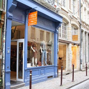La petite boutique vintage du Vieux-Lille vous propose des pièces de qualité depuis 2010. Un jean 501 ? Une veste Adidas style street-wear des années 90 ? Un chemisier dentelle année 80 ? Tilt vintage est le spécialiste!
33 rue de la Clef, métro Rihour
Be Bop Vintage :
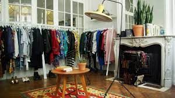Plus qu'une boutique, Be Bop vintage est ce que l'on appelle un concept store. En effet, ce showroom vintage a tout pour plaire ! Le patron, un
passionné, nous fait découvrir ses fantastiques trouvailles.
2 rue Nicolas Leblanc, métro République Beaux-Arts
Mad Vintage :
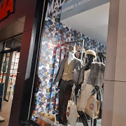La chaîne de vêtements et accessoires vintage la plus attendue est arrivée sur Lille en 2018. Au menu : les sacs en cuirs côtoient des vestes sportwear des années 90. Toutes les semaines découvrez de nouveaux arrivages autant au rayon homme qu'au rayon femme.
56b rue de Béthune, métro République Beaux-Arts
Oxfam :
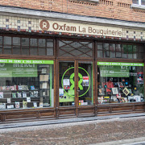Chez Oxfam vous pouvez donner des vêtements, des livres, des accessoires et bien plus encore... tout sera mis à la vente en boutique. Ainsi vous
pouvez trouver des pièces rares qui restent à petit prix. Son concept est régi par la loi 1901, Oxfam s'engage contre la pauvreté.
19 rue de l'Hôpital Militaire, métro République Beaux-Arts
Nostalgie :
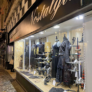Ouvert depuis 1988, Nostalgie est réputée dans le déstockage de pièces de luxe des années 1930 à aujourd'hui. Dans la boutique vous pouvez même bénéficier de conseils pour être parfaitement dans la tendance actuelle.
57 rue de la Monnaie, métro Rihour
Kilo Shop :
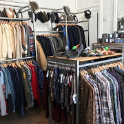Shopper, peser et acheter avec un prix fixe au kilo... c'est ce que propose le concept Kilo Shop, célèbre enseigne présente dans plusieurs pays d'Europe
et qui était déjà présente à Lille jusqu'en 2009 rue Gambetta avant de réouvrir en 2019 dans le Vieux-Lille. Grâce à cette boutique, vous allez
pouvoir redonner une seconde vie aux vêtements et ainsi favoriser une valeur qui plait à Kilo Shop : l'écologie.
5 rue Basse, métro Rihour
Yemma Friperie :
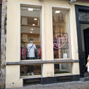C'est dans une ambiance intimiste, que vous allez dénicher la perle rare. Le propriétaire passionné par l'univers de la mode et de fripe vous fait rentrer dans un univers eco-friendly.
4 rue des Fossés, métro République Beaux-Arts
Bon Chic Bonne Fripe :
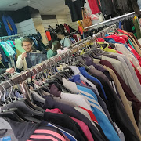La fripe c'est chic ! Voilà le message que veut nous renvoyer cette boutique rangée avec soin. Trouver un vieux modèle Levis n'a jamais été aussi
facile. Bon chic Bonne fripe est la friperie qui mérite le détour ! Petit plus : deux boutiques dans la même rue à quelques dizaines de mètres d'écart.
234 & 245 rue Gambetta, métro Gambetta
Maiterama Vintage :
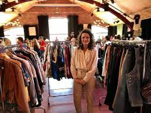Après avoir chiné dans l'armoire de vos parents vous vous sentez déçu de ne pas retrouver une vieille veste de tailleur à épaulette style année 80 ? Ne vous inquiétez pas Maiterama Vintage est là ! Chinez et débusquez des pièces qui ont plus de 30 ans d'âge !
2bis rue Princesse, métro Rihour
Les meilleures adresses Shopping de Lille
Ding Fring :
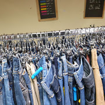La boutique située au cœur du quartier de Wazemmes est la friperie où vous pouvez dénicher des petits prix et des coups de cœur. De la fripe en
veux-tu en voilà grâce aux arrivages réguliers ! En plus de cela, vous faites une bonne action à chaque achat car les fonds sont reversés à Emmaus France.
8 rue Saint-Pierre Saint-Paul
Funny Vintage :
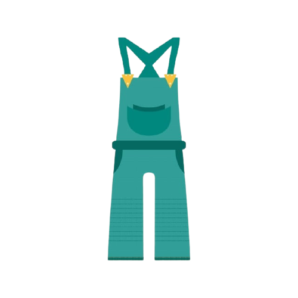La petite boutique situés sur la rue Gambetta n'a rien à envier à ses concurrentes. En effet, dès la vitrine vous pouvez vous apercevoir que Funny Vintage ne vend pas que des vêtements. Vous pouvez ainsi autant y dénicher un miroir datant des années 60 que des ceintures style vintage portées par vos parents. Les gérants de la boutique vous font ainsi partager des articles "chinés avec le coeur".
124 rue Léon Gambetta, métro Gambetta
SlowMod :

Des prix accessibles et une mode écolo pour femme et enfant ? C'est le concept que propose SlowMod cette friperie du centre de Lille. Dès l'entrée
vous ne pourrez vous empêcher de remarquer l'ambiance Cosy digne d'une vraie petite enseigne classique de prêt-à-porter. La gérante, qui a de la suite
dans les idées, organise des ateliers upcycling (restauration d'un vieux vêtement) ainsi que des vide-dressings.
63 rue Pierre Mauroy, métro Gare Lille Flandres